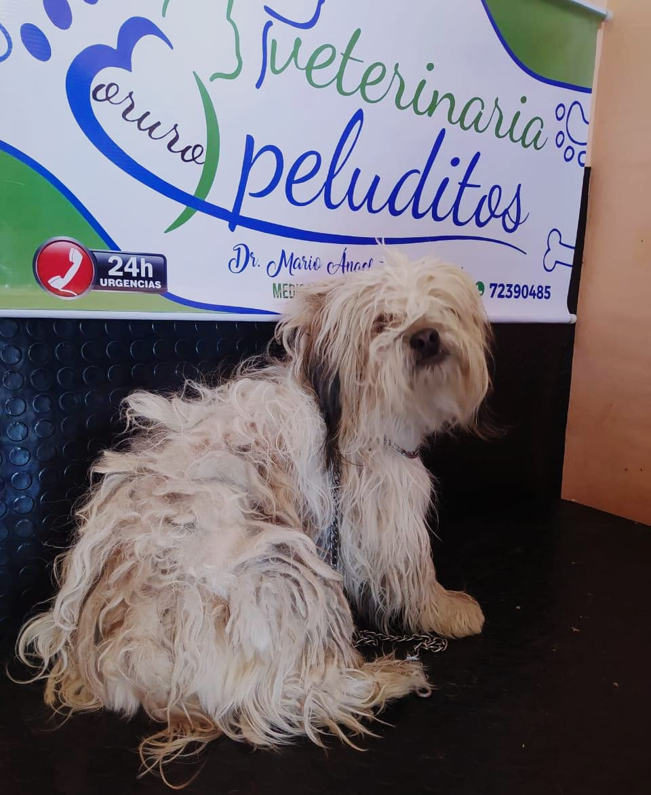
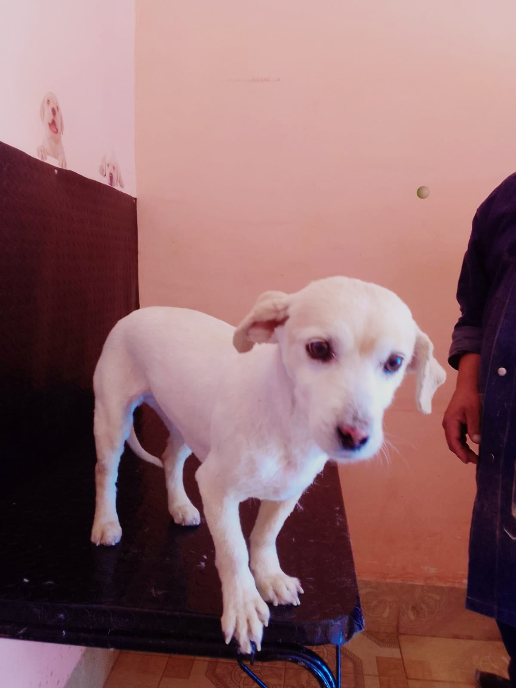
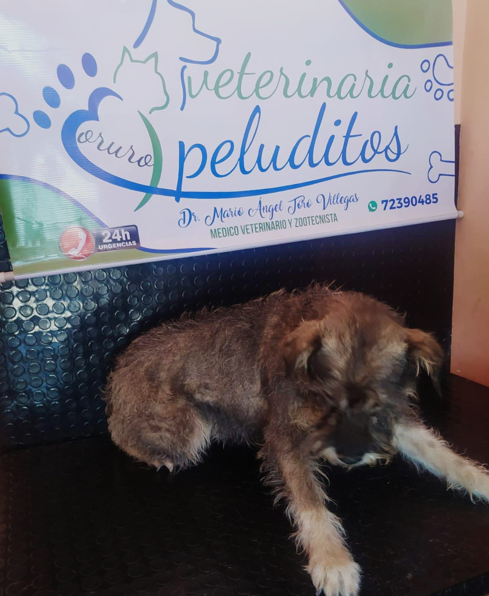
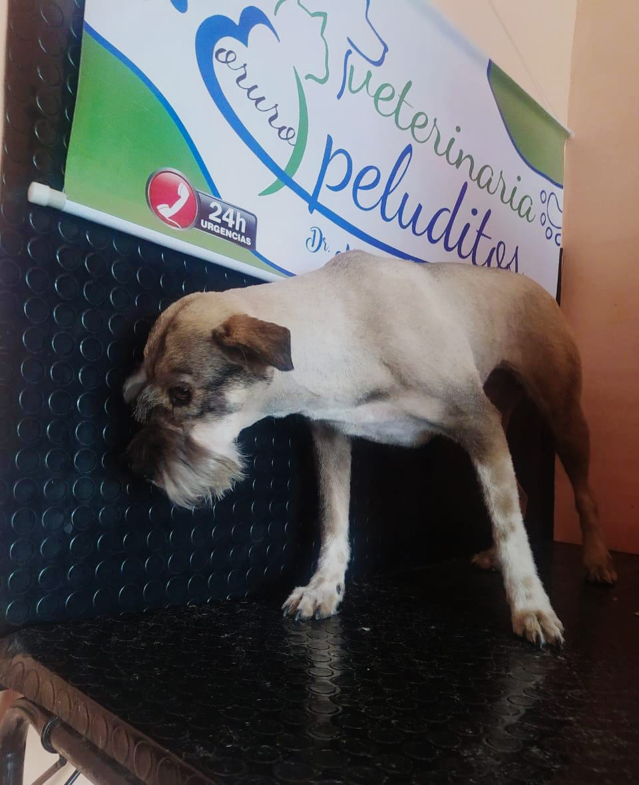
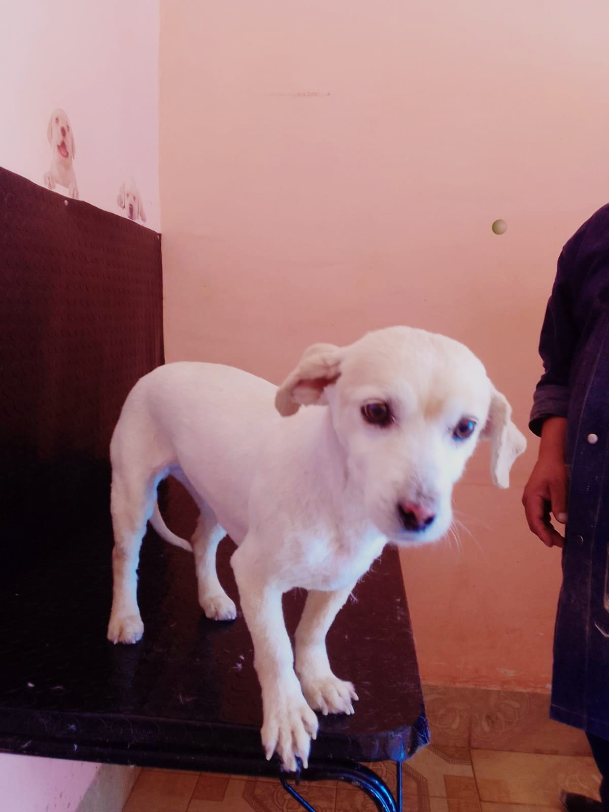
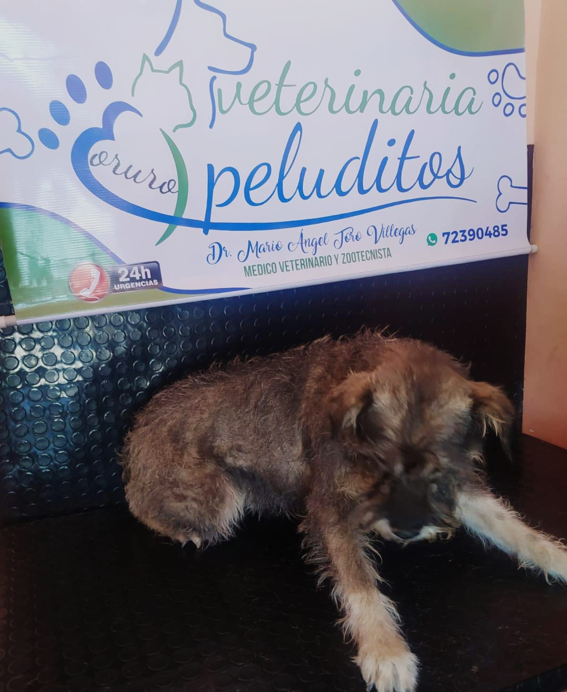
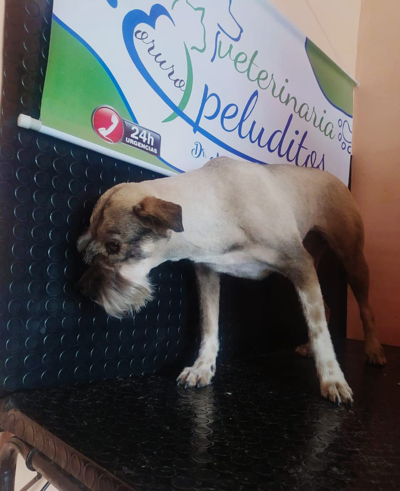
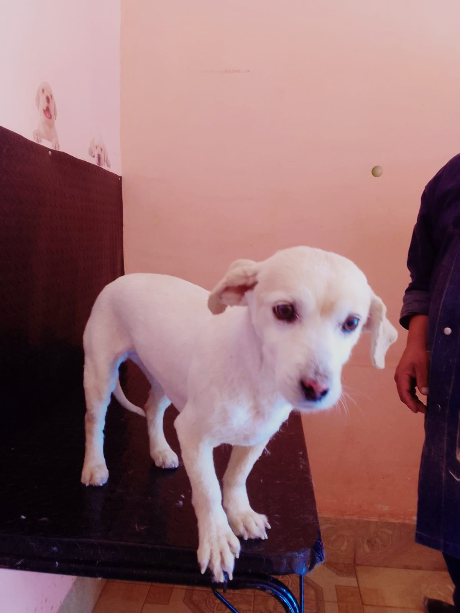
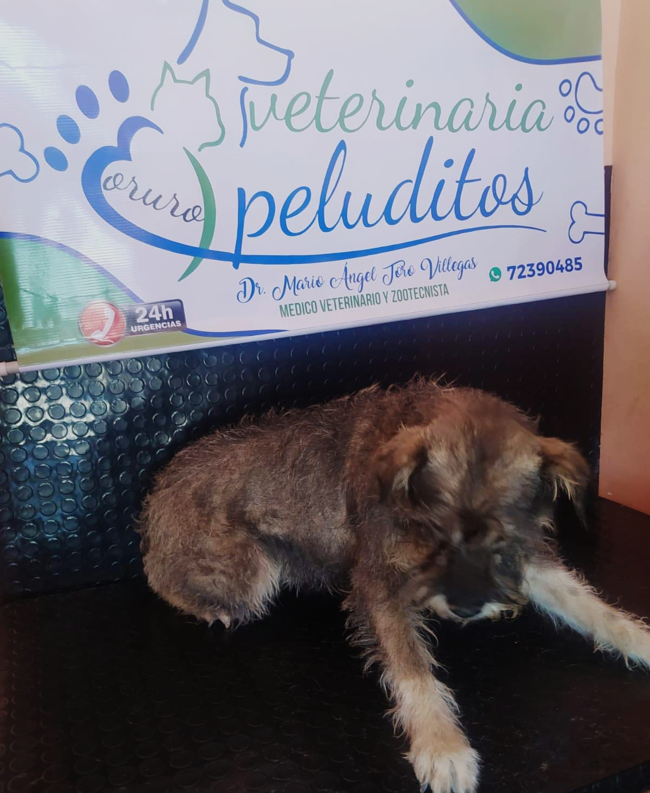
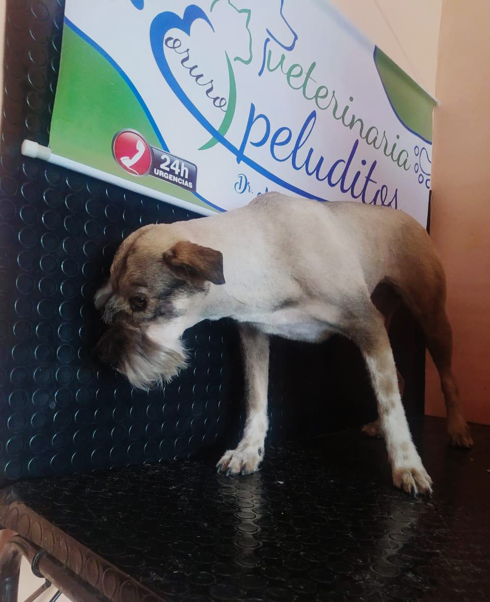

 








PELUQUERÍA CANINA
Ofrecemos servicios de peluquería canina para mantener a tu mascota limpia y saludable. Nuestro equipo de expertos asegura que cada perro reciba el mejor cuidado y atención.
Servicios de peluquería que ofrecemos:
- Baños y secados especiales.
- Corte de pelo y estilización.
- Recorte de uñas y limpieza de oídos.
Beneficios de elegir nuestra peluquería:
- Personal capacitado y amante de los animales.
- Productos de calidad para el cuidado de la piel y el pelaje.
- Ambiente relajante y amigable para tu mascota.